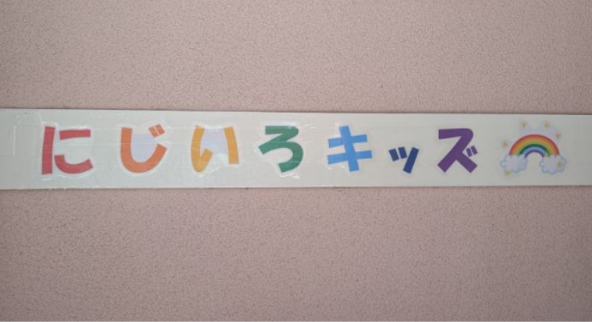
園児募集中
年齢や性別、性格など一人一人違うけど、みんな仲間。
お互いを思いやり、一緒に楽しく過ごして行きたいという想いから
『にじいろキッズ』という名前をつけました。
随時園児募集中
各線三宮駅近という利便性の良さも魅力的です。
頑張ってるパパ・ママのお仕事や出張でのお預かりはもちろん、
パパ・ママの用事(お買い物や結婚式、お食事会、病院など)、
リフレッシュの時間の一時預かりも大歓迎です。
24時間カメラを設置しています。
お子様の様子を安心してご覧いただけます。
お気軽にお問い合わせください。
～保育方針～
・笑顔と個性を大切に 伸び伸び過ごす
・異年齢児と過ごすことで思いやりの心を育てる
・チャレンジすることで達成感を意欲につなげる
～お知らせ～
2026/8/4 ホームページが出来上がりました
2026/8/4 ホームページを更新しました
～時間と料金～
・平日24時間
・日・祝日 基本休園
（預かり希望数に応じて開園・応相談）
・生後3ヶ月～小学三年生
（4～6年生 応相談）
| 昼部 | 夜部 | |
|---|---|---|
| 週2 | 25,000円 | 30,000円 |
| 週3 | 30,000円 | 35,000円 |
| 週4 | 35,000円 | 42,000円 |
| 週5 | 39,000円 | 50,000円 |
| 週6 | 45,000円 | 58,000円 |
| フリーパック* | 145,000円 | |
*フリーパック：月~土 24時間 食事込 (おやつ、お風呂別料金)
☆乳幼児料
| 0,1才児クラス | 2才児クラス | |
|---|---|---|
| 週2~4 | 2,500円 | 5,000円 |
| 週5~ | 5,000円 | 10,000円 |
一時預かり料金
時間、年齢によって異なります。(兄弟割引あり) 一分単位(一分17円～)で計算します。 お気軽にお問い合わせください。～年間行事～
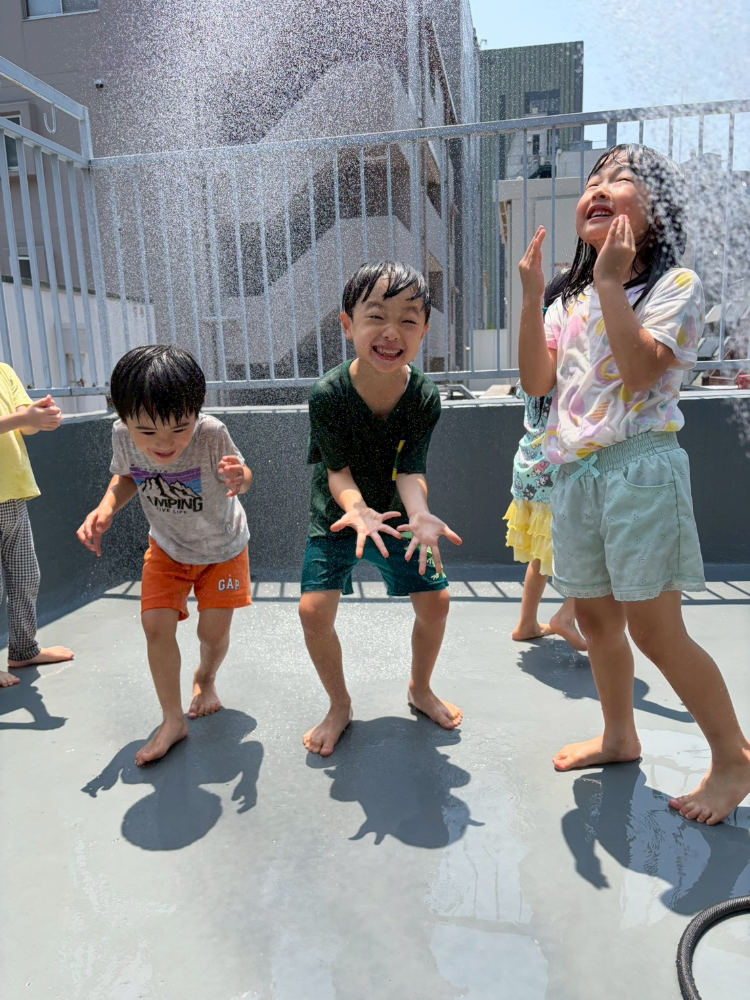
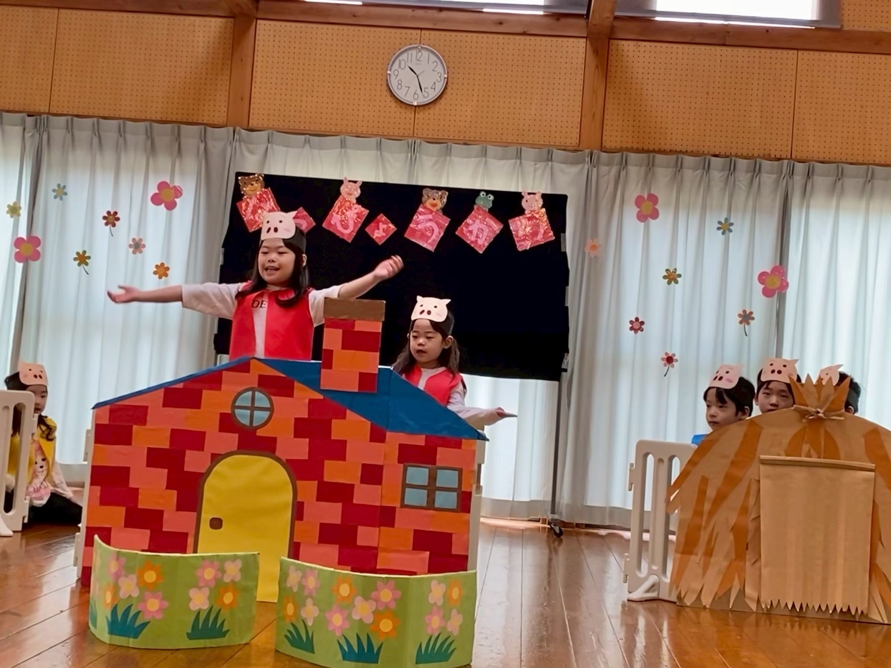
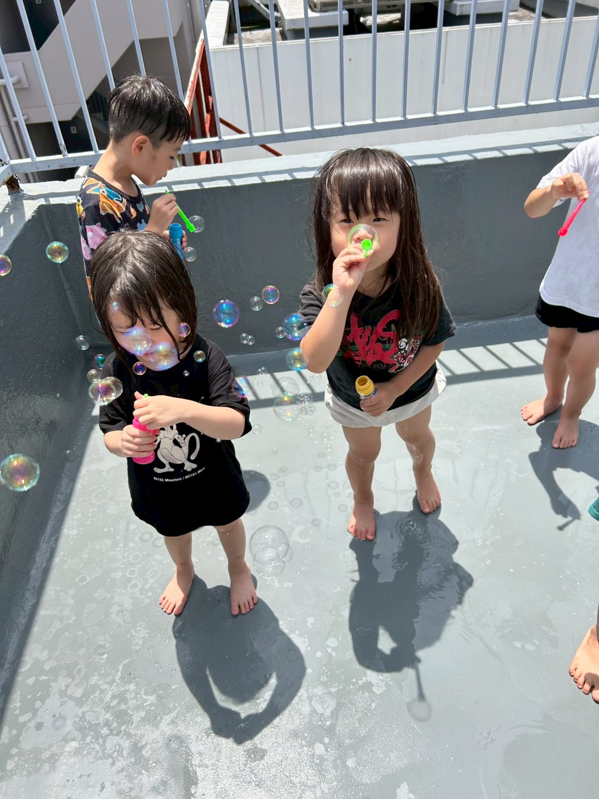
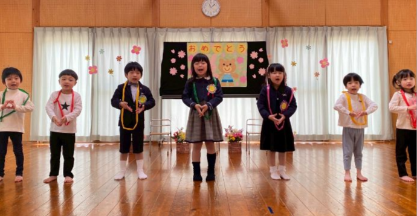
| 4～5月ごろ | 春の遠足 |
|---|---|
| 6～7月ごろ | 水遊び・七夕まつり |
| 8～9月ごろ | お泊まり保育・(運動会)* |
| 10～11月ごろ | 秋の遠足・(運動会)* |
| 12～1月ごろ | クリスマス会・お正月あそび |
| 2～3月ごろ | 豆まき・発表会・卒園式・お別れ遠足 |
～1日の流れ～
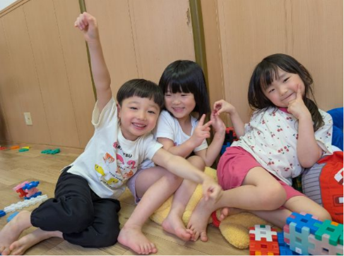
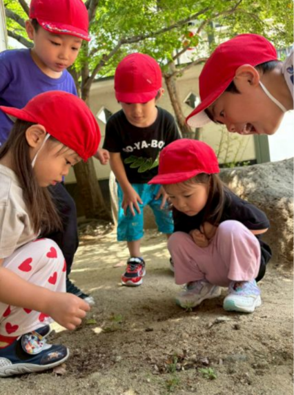
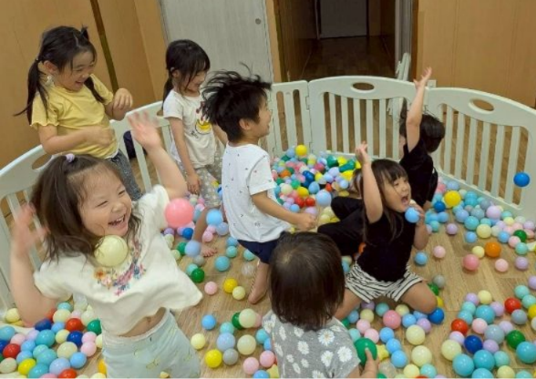
縦割り保育で年下のお友だちに
優しく接するお兄ちゃん、お姉ちゃん
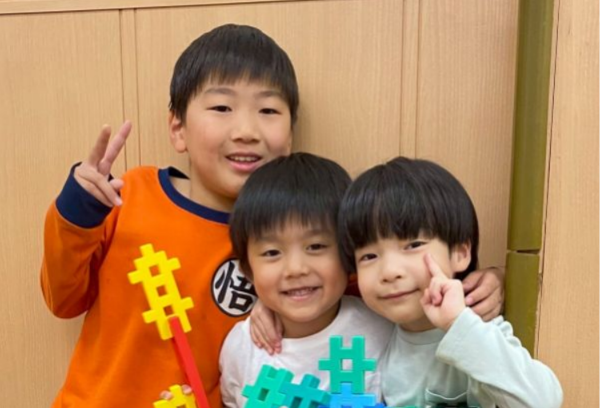
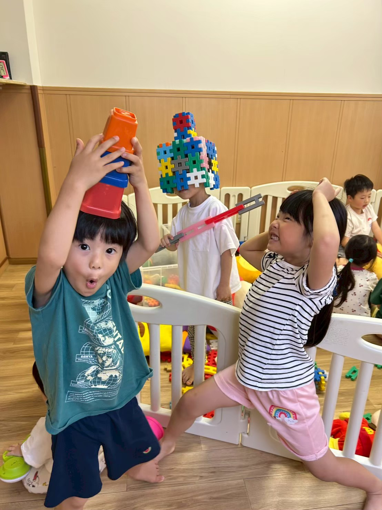
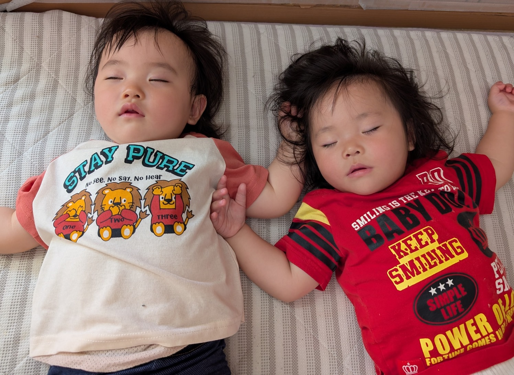
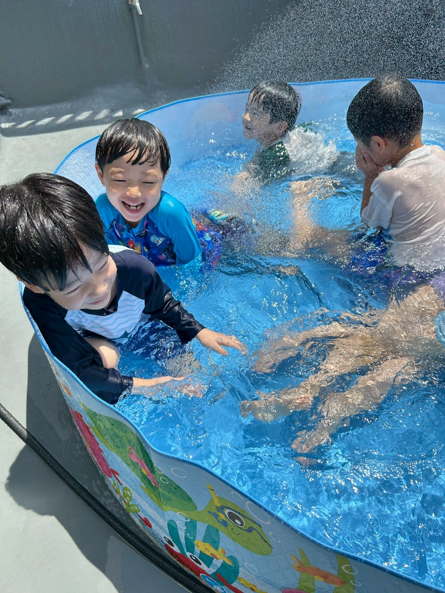
順次登園
自由あそび
11:00 設定保育
12:00 昼食
12:30 午睡
14:00 おやつ
自由遊び
昼部降園
夜部順次登園
16:00
｜
お風呂
17:00
17:30
｜
夕食
18:30
自由あそび
19:30 設定保育
20:30 就寝準備
21:00 就寝
給食は、栄養のバランスを考え、栄養士が献立を作成しております。
設定保育では、体操、手遊び、リトミック運動遊び、制作、絵本などを楽しみ、
お天気の良い日は公園やお散歩にも行きます。
～アクセス～
〒651-0094
兵庫県神戸市中央区琴ノ緒町5丁目6-15 中山ビル
駅近、便利 24時間保育園
JR三ノ宮駅東口から
子供と歩いて4分
～お問合せ～
TEL 078-855-6344
ケータイ 090-3429-6186
お気軽にお問合せください
心よりお待ちしています
～職員募集～
当園では、一緒に働いてくれる仲間も募集しています
保育士・保育補助・調理師・経理事務・夜勤勤務
空いている数時間のパート・アルバイトもOKです
フリーター・Wワーク・主婦・学生・子供が大好きな方
是非一緒に働きましょう
お気軽にお問い合わせください
随時園児募集中
ご連絡お待ちしております
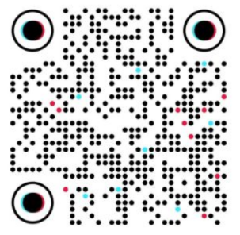